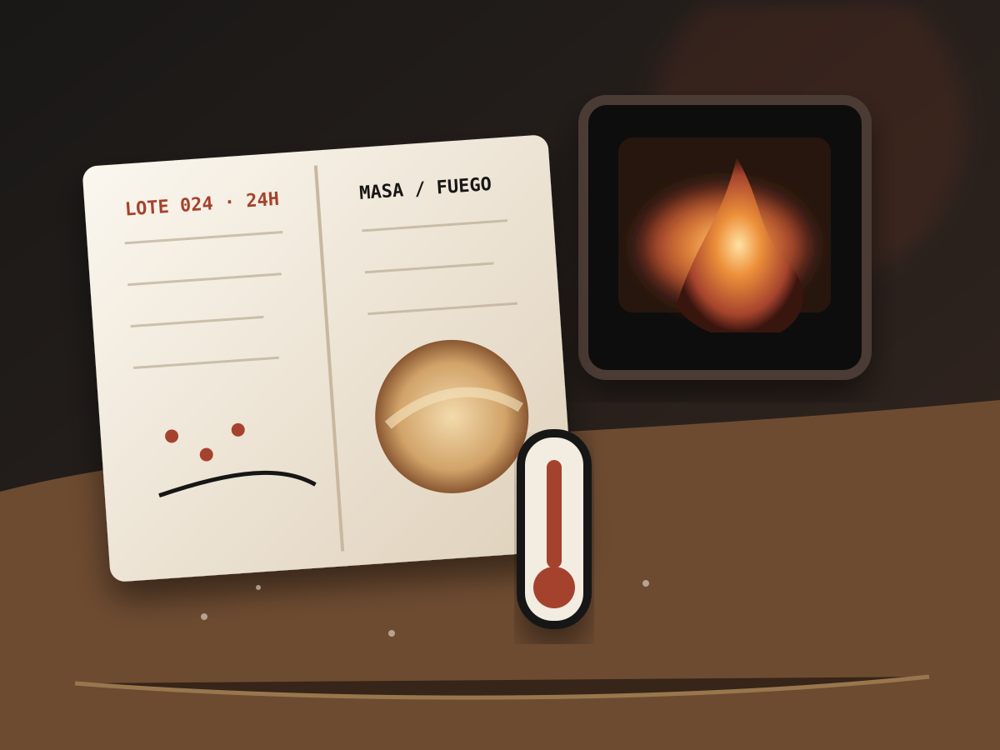

Nuestra historia
Viajar hasta el origen. Volver para construir algo propio.
El Errante nace de una búsqueda: comprender la pizza, desarrollar una masa propia y traducir esa técnica al territorio colombiano.
El punto de partida
La harina que buscábamos no estaba esperando en una estantería.
La masa que queríamos exigía absorción, resistencia, extensibilidad y estabilidad. En lugar de adaptar el resultado a una harina disponible, empezamos a formular un blend propio.
Así nació Aire y Tiempo: una mezcla desarrollada para que la fermentación prolongada y la apertura manual fueran decisiones controlables, no accidentes.
Conocer Aire y Tiempo Una masa se formula con datos. Se aprueba con las manos.
Una masa se formula con datos. Se aprueba con las manos.Una tradición inquieta
Aprender no significa copiar.
La técnica orienta el camino; el territorio decide cómo continúa.
Viajar
Acercarnos a los lugares, hornos y personas donde la tradición sigue viva.
Comprender
Separar el gesto aprendido de la razón técnica que lo sostiene.
Volver
Releer lo aprendido desde nuestras materias primas, equipos y hábitos.
Construir
Crear productos propios sin disfrazarlos de una historia que no les pertenece.
Masa · Fuego · Territorio
Tres ideas sostienen todo lo que hacemos.


El producto insignia
La Errante resume el viaje.
Chorizo artesanal, cebolla caramelizada, mozzarella, queso madurado y reducción de panela con maracuyá.
No intenta parecer una pizza italiana. Usa una técnica aprendida para construir un sabor que reconoce de dónde viene.
Conocer La ErranteUna pizzería que viaja
El camino también ocurre frente a los invitados.
La unidad móvil lleva masa, hornos y preparación en vivo a bodas, empresas, celebraciones y talleres.
Conocer En Movimiento
La búsqueda continúa
No existe una versión final de una marca que aprende.
Cada lote, receta, evento y conversación vuelve a poner a prueba lo que creemos saber.